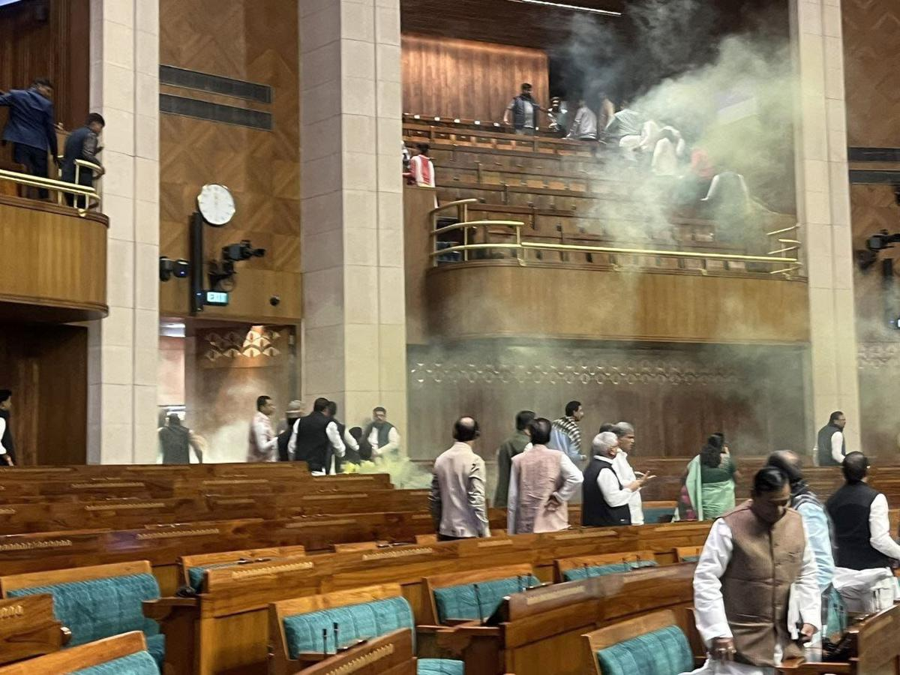
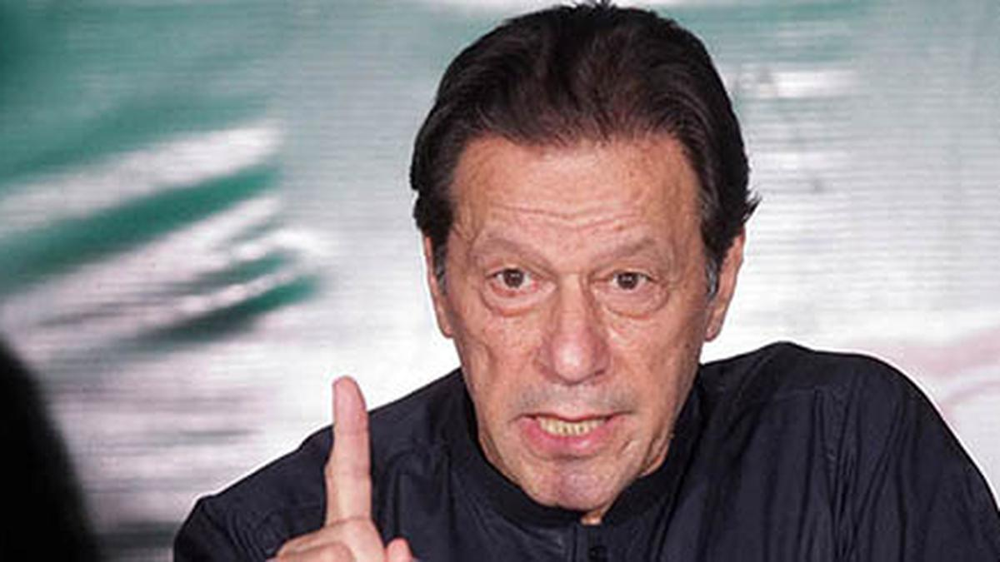
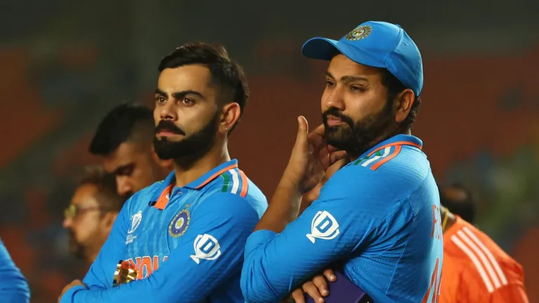
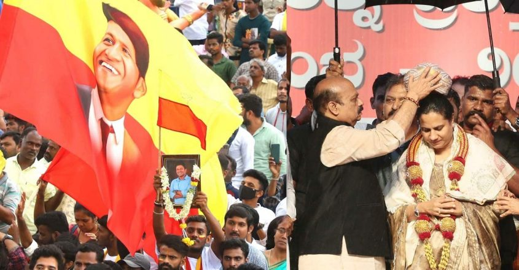

National News
Security breach in Parliament as two persons jump into Lok Sabha from public gallery.
Disruption takes place hours after Lok Sabha pays tribute to 2001 Parliament attack victims; Speaker Birla
calls meeting of MPs to discuss security lapse

Green smoke fills the Lok Sabha hall as MPs vacate following a security breach in Parliament on December 13,
2023. | Photo Credit: Special Arrangement
Sources said one of the persons was named Sagar Sharma, and that the pass was reportedly sponsored by BJP MP
from Mysore Pratap Simha. Some eye-witnesses said there were two more protesters who remained in the gallery.
read more
International News
Pakistan court indicts Imran Khan for leaking state secrets - media
He has pleaded not guilty to the charges, media organisations in the country reported

A Pakistani court on December 13 indicted former Prime Minister Imran Khan
on charges of leaking state secrets, several media channels reported, delivering a fresh blow to the jailed
leader's chances of contesting next year's federal elections.
The charge is related to a classified cable sent to Islamabad by Pakistan's ambassador in Washington last year,
which Khan is accused of making public.
read more
Sports
Rohit Sharma on the disappointment of losing the World Cup final: ‘I had no idea how to come back from this.
The first few days I didn’t know what to do’
Rohit, speaking on the official Instagram account run by his team, said that he found it hard to digest the
fact that his team fell short of winning what he felt was the ultimate prize in cricket.

India's captain Rohit Sharma walks back to pavilion after his team lost
to Australia by 6 wickets during the ICC Men's Cricket World Cup final match in Ahmedabad, India, Sunday,
Nov.19, 2023.
Rohit Sharma said that it took a while for him to move on from the disappointment of not
winning the ICC Men’s Cricket World Cup final but the empathetic reaction from fans he has met has helped him
heal.
read more
Entertainment
Puneeth Rajkumar conferred with 'Karnataka Ratna' posthumously

Bengaluru: Karnataka government conferred 'Karnataka Ratna' award
to late Kannada superstar Puneeth
Thousands of fans witnessed the programme amid rains and cheered the recognition to their favourite
Ashwini Puneeth Rajkumar, the wife of the late actor, received Mysuru peta (traditional cap) and award as
thousands cheered and celebrated
read more